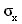
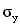
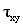
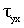
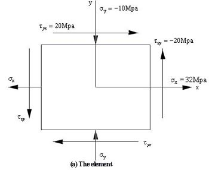
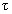
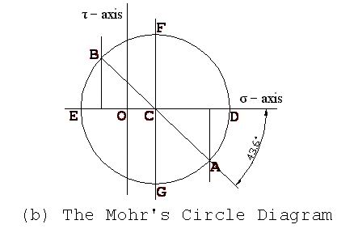

An approach of representing the stresses (force per unit area) on a body is the Mohr's Circle - devised by Otto Mohr in 1882. It's a very nice method of representing the stresses and analyze where they occur, so it's used widely. In this problem we are not concerned with the details of the theory, we will just know how to use this device at work.
Let a stress state is described by two principle stresses (Load which tries to compress or elongate) ,  and two torsional stresses (Load which tries to twist) , as shown in the example below, Figure a. As is always equal to but in reverse direction, in the input these will be given as , and. Thus input for the following condition is (32, -10, 20, CCW).

Step 1 : Draw two perpendicular line indicating horizontal line as axis and the vertical line as axis. The point of intersection is the center point (0,0) and both the stresses is zero there. See Figure b below.
Step 2 : Locate points (,) and (,) and connect them with a straight line. Indicated by point A (32, -20) and B (-10, 20) respectively in Figure b.
Step 3 : Draw a circle with the line AB as the diameter and the intersection of the line AB and DE ( axis) as the center (point C).

Now for maximum normal stress condition:
>> Maximum normal stress angle = half of angle ACD = 43.6 / 2 = 21.8 degree. Angle ACD will not be greater than 90 degree only for current problem.
>> Maximum and minimum normal stress = OD and OE respectively = 40 & -18 respectively.
For maximum shear stress condition
>> Maximum shear stress angle = half of angle ACD + 45 = 21.8 + 45 = 66.8 degree
>> Maximum shear stress = CF = 29
>> Normal stress at this condition = OC = 11
Remember, on the ordinate
clockwise (CW) shear stresses are plotted up; counterclockwise (CCW) shear
stresses are plotted down. Moreover
always has the same
value as
but
inverse in direction,
i.e.
=
-.
After that print maximum shear stress angle as stated in the example above (angle ACD + 45). On the next line print the value of CF, followed by the value of CO.
Each real number must be rounded to the nearest 2 digits after the decimal point. Consider the format of the sample output below while printing the values. Output a blank line between two consecutive output set.
32 -10 20 CCW 80 -40 0
Element : 1 Position of maximum normal stresses : 21.80 deg Maximum normal stresses : 40.00 MPa and -18.00 MPa Position of maximum shear stresses : 66.80 deg Maximum shear stress (xy plane) : 29.00 MPa Normal stress at this condition : 11.00 MPa Element : 2 Position of maximum normal stresses : 0.00 deg Maximum normal stresses : 80.00 MPa and -40.00 MPa Position of maximum shear stresses : 45.00 deg Maximum shear stress (xy plane) : 60.00 MPa Normal stress at this condition : 20.00 MPa